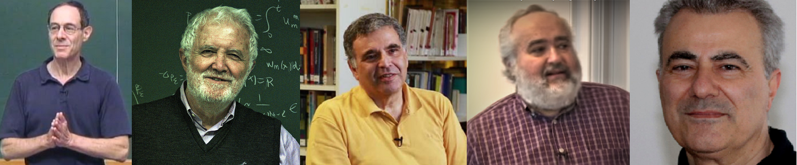

Sebastià Xambó Descamps
Universitat Politècnica de Catalunya
_____________________________________
Después de los artículos [50] y [51] sobre la vida y obra de Alessio Figalli, escritos en la estela de su investidura como DHC por la UPC, 2 en estas notas he tratado de producir una aproximación a su personalidad científica matizada por la consideración de lo que representa la SEMA y, en la medida de lo posible, por las probables expectativas de las personas que leen este Boletín.
Vaya ya dicho que una fuente esencial para obtener información de primera mano sobre Alessio Figalli es su página web en el DMATH de la ETH, institución en la cual es también director del FIM: https://people.math.ethz.ch/~afigalli/. Continuamente actualizada, en ella se accede a su currículo, en versión breve e in extenso; a listados de sus muchos premios, distinciones, honores y conferencias invitadas; a todas sus publicaciones, clasificadas según distintos criterios; a sus compromisos como editor de revistas matemáticas; sus estudiantes de doctorado y postdocs; los cursos y seminarios impartidos; vídeos de conferencias y enlaces a entrevistas; y una página especial para su proyecto ERC. Se mire como se mire, es una obra ingente y asombrosa, pues en el momento de escribir estas notas (abril de 2020) hace apenas trece años desde su tesis doctoral (octubre de 2007). Para una sinopsis de muchas de estas informaciones, véase [39, pósteres 5 y 6].
Empecemos por indagar cómo fue el inicio de su andadura como matemático. En 2001, con diecisiete años, Figalli está terminando el bachillerato en un «liceo clásico» de Roma, que en España vendría a ser una opción de letras. La idea en Italia es que estos centros proporcionan una educación con la que luego se puede acceder a cualquier estudio. ¿Qué sucedió que incitara su inflexión hacia las matemáticas? Esencialmente son dos constataciones consecutivas. Una, que las matemáticas se le dan bien, ya que las asimila con muy poco esfuerzo. La otra, su participación, siguiendo la sugerencia de un colega de su padre, en la olimpiada matemática. Descubre así que los problemas que se proponen solo se pueden resolver con inventiva y le fascina constatar la magia de su soplo, de una u otra forma, en el proceso de pensamiento que lleva del planteo a la solución. El hecho es que estas experiencias le infunden el vivo deseo de entrar en la «Scuola Normale Superiore de Pisa» (SNSP), que es el centro multidisciplinario de la Universidad de Pisa al que todos los olímpicos de su grupo quieren entrar. Pero lleva un retraso considerable respecto a los estudiantes de «ciencias» y por tanto se tiene que aplicar a fondo en el estudio de las matemáticas y la física para poder aspirar a superar los exámenes de ingreso. Se impone un metódico y disciplinado plan de trabajo con el cual consigue afianzar suficientes conocimientos para superar dichos exámenes, y es así como inicia en octubre de 2002, con dieciocho años cumplidos, los estudios universitarios de matemáticas.
El primer año en la SN tiene que seguir con su plan para ponerse a la par de sus colegas. El éxito en los exámenes prueba que consiguió su propósito. Pero en realidad alcanzó una ventaja considerable, como quedó patente a principios de su segundo año según el testimonio de Luigi Ambrosio. El hecho es que este profesor le dio a leer el artículo [1], bastante técnico, escrito en colaboración con Giovanni Alberti y Xavier Cabré en una de las visitas de éste a Pisa (véase también [4]). El caso es que Figalli compareció en el despacho de Ambrosio al cabo de una semana y éste pudo comprobar que lo había entendido todo. Este episodio sugiere que Figalli ha determinado la dirección de su misión: la investigación en matemáticas. Los pasos sucesivos lo confirman ampliamente. A finales del segundo curso defiende su tesis de grado (sobre temas relacionados con los artículos mencionados, y más concretamente sobre las relaciones entre el problema de Bernstein 3 y la conjetura de De Giorgi). Dos años después (a finales del último año, el cuarto), defiende la tesis de máster (en la que en particular obtiene, con una sorprendente madurez técnica y conceptual, una comprensiva teoría del transporte óptimo para variedades riemannianas no compactas). Y un año después, con veintitrés años, obtiene el doctorado. Con máximos honores en los tres casos.
Portadas originales de las tesis de grado, máster y doctorado.
Las figuras de «Relatore» y «Contrarelatore» en las tesis de grado y máster, y sus filiaciones, apuntan a la estructura dual del plan de estudios de la SN. A todos los efectos, sus alumnos lo son también de la Universidad de Pisa, pero con un plan formativo adicional en la SN esencialmente orientado a la investigación. Giovanni Alberti es catedrático de Análisis Matemático de la UP y Luigi Ambrosio, discípulo de Ennio De Giorgi (1928-1996), lo es de la SN.
Detengámonos a destacar algunos aspectos de la tesis doctoral. Fue codirigida por Luigi Ambrosio y Cédric Villani (École Normale Supérieure de Lyon, MF 2010). Con más de 250 páginas, cada uno de sus cinco capítulos está basado en uno o más trabajos ya publicados o, en aquel momento, pendientes de publicación. Los títulos de los capítulos son bastante descriptivos, pero nos parece más informativa la descripción que de su contenido se hace en la introducción: 1) Transporte óptimo en variedades con costes geométricos (parte de resultados en colaboración con A. Fathi y C. Villani); 2) Irrigación óptima (con M. Bernot), un tema en el cual cita dos pioneros trabajos de Vicent Caselles (AM), [7] y [8]; 3) Teoría variacional de Brenier de los fluidos incompresibles (con L. Ambrosio); 4) Teoría de Aubry–Mather y soluciones de las ecuaciones de Hamilton–Jacobi (con A. Fathi y L. Rifford); y 5) Teoría de DiPerna–Lions sobre las soluciones de ecuaciones diferenciales estocásticas (basado en [24]). La tesis termina con un apéndice con dos secciones, una dedicada a describir con mucha generalidad las funciones semi-cóncavas y sus propiedades, y otra dedicada a las llamadas lagrangianas de Tonelli, una teoría cuya función es enlazar el cálculo de variaciones con el trasporte óptimo. Finalmente señalar que el párrafo que precede a estas descripciones resume en dos pinceladas la filosofía investigadora de su autor: «En el desarrollo de la teoría del transporte óptimo, así como en el desarrollo de otras teorías, es importante, por un lado, explorar nuevas variantes del problema original, y por otro descubrir, en esta variedad emergente de problemas, algunas características comunes (y a veces inesperadas). Este tipo de análisis es el hilo conductor de nuestra tesis.»
Con lo dicho ya se observa una especial predisposición de Figalli a compartir proyectos y tareas de investigación con otras personas. Esta observación queda confirmada al comprobar el gran número de colaboradores que concurren en sus publicaciones, personas que invariablemente tienen un gran nivel. Es por ello que parece oportuno dejar constancia aquí de este aspecto de su perfil científico. Básicamente, seguiremos el orden de la antigüedad investigadora de las personas colaboradoras (indicada por el año del primer artículo reseñado en MR), pero agrupadas, por conveniencia de la composición textual y gráfica, en pequeños grupos sucesivos como en [50, segundo póster].
Luigi Ambrosio, Scuola Normale Superiore di Pisa. Fermat Prize 2003. Balzan Prize 2019. Cédric Villani, Institut Henri Poincaré, Université de la Sorbone, Université de Lyon, Institut Camille-Jordan. EMS Prize 2008. Fermat Prize 2009. Fields Medal 2010. Doob Prize 2014. Luis A. Caffarelli, University of Texas at Austin. Steele Prize 2009. Wolf Prize 2012. Shaw Prize 2018. Jean Bourgain (1954-2018). Fields Medal 1994. Shaw Prize 2010. Crafoord Prize 2012. Steele Prize 2018. Haïm Brezis. Université Pierre et Marie Curie. Profesor visitante distinguido de la Rutgers University. Autor del tratado [12] (traducción de su Analyse fonctionelle, 1983, ha sido referencia constante como libro de texto en muchas universidades). Según ISI, es investigador muy citado. Entre sus alumnos figuran Jesús Ildefonso Díaz (UCM 1976, AM), Jesús Hernández (UAM 1977), Juan Luis Vázquez Suárez (UAM 1979, AM), Miguel Á. Herrero (UCM 1979, AM), José Carrillo Menéndez (UCM 1981) y Miguel Escobedo (EHU 1988).
Este primer grupo está encabezado por sus directores de tesis (una excepción a la regla de antigüedad investigadora) e incluye a Luis A. Caffarelli (AM), Jean Bourgain y Haïm Brezis. Se ha de advertir, para evitar confusiones, que este esquema no tiene en cuenta ni el número de colaboraciones ni el momento en que se produjeron. Así, en este primer grupo, Bourgain y Brezis aparecen por una colaboración puntual [3] (2016), anunciada en [2] (2014), en la que se establece una importante desigualdad isoperimétrica relacionada con un resultado previo de ambos autores (junto con P. Mironescu: A new function space and applications). Luis Caffarelli es coautor de cinco trabajos, de 2012 el primero y pendiente de publicación el último. Las colaboraciones con Cédric Villani, seis en total, se produjeron en el período 2007-2012, y con Luigi Ambrosio, catorce, en el período 2008-2017.
Entre los colaboradores de Figalli me parece oportuno destacar, en el contexto de este artículo, a Xavier Cabré (AM). Profesor ICREA de Investigación desde 2003 en el DMAT de la UPC, y catedrático de Matemática Aplicada en el mismo desde 2008, su área de investigación son las EDP. Se doctoró en 1994 en el Courant Institute de Nueva York bajo la supervisión de Louis Nirenberg (1925-2020) con la tesis Estimates for Solutions of Elliptic and Parabolic Equations. Premio Kurt Friedrichs de la Universidad de Nueva York, 1995. Miembro del IAS, 1994-95. Habilitation à diriger des recherches, Université Pierre et Marie Curie-Paris VI, 1998. Harrington Faculty Fellow, The University of Texas at Austin, 2001-02. Fellow of the American Mathematical Society, inaugural class, 2012. Coautor, con Caffarelli, de la memoria [16]. Como ya se ha indicado, el artículo [1] fue de los primeros artículos de investigación que influyeron en Figalli. Por otra parte, y como veremos posteriormente, sus ex-alumnos de doctorado Xavier Ros-Oton y Joaquim Serra, y él mismo, cuentan entre los colaboradores más importantes de Figalli en los últimos años. Finalmente, dejar constancia que Cabré fue encargado de la laudatio en la ceremonia de investidura de Figalli como DHC de la UPC celebrada el día 22 de noviembre de 2019. Para más información, véase [50] (incluye tanto dicha laudatio como la lectio honoris causa de Figalli).
Francesc Torres (rector UPC), Figalli y Cabré. Figalli en un momento de su lección doctoral.
Figalli pasa los cursos 2007-08 y 2008-09 en Francia como investigador en la Universidad de Niza y como «Professeur Hadamard» en la «École Polytechnique de Palaiseau», respectivamente. En febrero de 2009 presenta la memoria Optimal transport, Euler equations, Mather and DiPerna–Lions theories (53 páginas) para habilitarse como director de investigaciones en la Universidad de Niza.
En Palaieau promueve el magnífico opúsculo Autour des inégalités isopérimétriques (Éditions de l’École Polytechnique, Palaiseau, 124 páginas), que ilustra la colaboración, la diversificación de temas, y el espíritu investigador y didáctico. Figalli es editor y también autor del prólogo. Es el resultado de la coordinación, en el curso 2008-09, de un grupo de siete estudiantes de segundo año de la «École Politechnique» (W. Bench, C. De Franchis, L. Deproit, S. Gilles, B. Oh, A. Tenne, y K. Webster, que aparecen como autores) que «mostró un interés particular por las matemáticas y más específicamente por el tema de las desigualdades isoperimétricas, que deseaban estudiar tanto desde un punto de vista matemático puramente teórico como por sus aplicaciones a otras disciplinas» (del prólogo). Contiene siete capítulos preparados conjuntamente por los autores: 1) Relación con el cálculo de variaciones; 2) Generalización a cualquier dimensión finita; 3) Aplicaciones físico-químicas [forma de los cristales, estructuras óptimas; ¿se puede escuchar la forma de un tambor?]; 4) Transporte óptimo; 5) Generalización algebraica [contiene una sección sobre aplicaciones a la teoría de grafos]; 6) Generalización a las variedades; y 7) Conclusión [en que se evocan «algunas desigualdades célebres que nos hubieran podido conducir igualmente a la desigualdad isoperimétrica»].
En la contraportada hallamos una buena descripción del alcance de la obra: «Uno de los problemas de optimización más antiguos son las desigualdades isoperimétricas. Están vinculados a muchas teorías, cuyos marcos se aclaran y enriquecen mutuamente. Este trabajo sintetiza estas diferentes teorías, destacando sus interrelaciones, y presenta diferentes aplicaciones de cada una de ellas en varios campos. Desde las áreas más abstractas hasta las cuestiones de la vida cotidiana, este libro muestra cómo una desigualdad aparentemente tan simple y tan específica en realidad se extiende a ramas enteras de las matemáticas y a otras ciencias».
En el segundo curso de su estancia en Francia imparte una conferencia en el Seminario Bourbaki 2008-2009 titulada «Regularity of optimal transport maps (after Ma–Trudinger–Wang and Loeper)» [SB en lo que sigue], que se publica en Astérisque 332, 341-368, SMF. Además, aparece la monumental obra [49] de Villani sobre transporte óptimo y Figalli escribe una detallada reseña para el BAMS, [26].
Estos dos trabajos de Figalli (y también [29]) constituyen valiosos indicadores del contexto investigador de la etapa francesa y del grado de madurez y prestigio de su autor alcanzados en tan solo siete años desde su ingreso en la SNSP. En los agradecimientos, Villani escribe que «Alessio Figalli asumió el formidable desafío de revisar todo el manuscrito, desde la primera hasta la última página», con la connotación de que fue el único en realizar tal proeza. Naturalmente, esta lectura incide en su reseña de la obra, cuyo propósito es «examinar brevemente el apasionante y muy activo campo del transporte óptimo, con énfasis en el contenido y las características del libro que se está revisando». En la reseña, Figalli también menciona [48], un interesante volumen que en cierta manera es precursor del libro que se reseña, pero que de hecho tiene, por su enfoque, un carácter complementario.
La actividad relacionada con el transporte óptimo se describe con autoridad en el párrafo introductorio de la reseña, como apropiadamente incumbe al estatus puntero alcanzado por el autor desde su tesis doctoral: «El problema del transporte óptimo ha recibido la atención de muchos investigadores en las últimas dos décadas, y su popularidad sigue aumentando. Esto está motivado principalmente por el descubrimiento de conexiones inesperadas entre transporte óptimo y problemas en física, geometría, ecuaciones diferenciales parciales, etc.» Explica el problema del transporte óptimo (§2) y la relación de la regularidad del transporte óptimo con la ecuación de Monge–Ampère (§3). Esta sección termina con el siguiente comentario: «En el capítulo 12 del libro que estamos revisando, el autor ofrece una muy buena introducción a la teoría de la regularidad del transporte óptimo. Pero dado que el libro se completó en 2008, no se tratan algunos de los desarrollos más recientes que vinculan el tensor de Ma–Trudinger–Wang con la geometría de la variedad», y remite al artículo SB para una «presentación reciente de estos resultados».
De la bibliografia incluida en SB se desprende que entre los resultados a los que se refiere cabe contar especialmente los artículos siguientes, de los cuales es coautor: [31] (con Loeper), [33] (con Rifford), y [34, 35, 36] (con Rifford y Villani, anunciados como «en preparación»).
El artículo SB es también una introducción a la evolución histórica del tema, resaltando algunos de los hitos alcanzados por los investigadores más destacados: Monge (1781), Brennier (1987, 1991), Caffarelli (1990, 1991, 1992, 1996), Urbas (1997), McCann (2001, 2007, 2008), Nirenberg (2005), Ma–Trudinger–Wang (2005), Liu (2009), Loeper (2009 –artículo en Acta Mathematica [43]–, 2011), Trudinger–Wang (2009), Loeper–Villani (2010), etc. Menciona también dos volúmenes de 1998 que se pueden considerar una especie de biblia sobre problemas de transporte de masas: [46] (Teoría, xxv+513 páginas) y [47] (Aplicaciones xxv+430 páginas). Aunque no los cita en SB, parece claro que circulan textos como [42], [40], [18], [41], [15], [5], [22], [19], [45], etc. cuyo contenido es familiar a todos los expertos, y lo mismo sucede con artículos como [21], [37] [44], [38], etc. Forman parte del paisaje de los estudiosos del análisis de aquellos días.
Aunque a partir del curso 2009-2010 el destino de Figalli está en la «University of Texas at Austin», el curso 2011-2012 vuelve a estar conectado con Francia al ser galardonado con el premio Peccot-Vimont e impartir el correspondiente «Cours Peccot» en el «Collège de France»: Stabilité dans les inégalités fonctionnelles, transport optimal et EDP. En esta distinción está en compañía de ilustres predecesores, como Laurent Schwartz (MF 1950), Jean-Pierre Serre (MF 1954), Alexander Grothendieck (MF 1966), Pierre Deligne (MF 1978), Alain Connes (MF 1982), Pierre-Louis Lions (MF 1994), Cédric Villani (MF 2010) o Artur Avila (MF 2014).
A estas credenciales hay que añadir el Premio de la Sociedad Matemática Europea, que le fue otorgado en el VI Congreso Europeo de Matemáticas (2-6 de julio de 2012, Kraków, Polonia). La mención dice así: «Por sus destacadas contribuciones a la teoría de la regularidad de las aplicaciones de transporte óptimo, a las desigualdades geométricas y funcionales cuantitativas y a soluciones parciales de las conjeturas de Mather y Mané en la teoría de los sistemas dinámicos.» La correspondiente conferencia plenaria, titulada Stability in geometric and functional inequalities [27], describe, después de hacer honor detallado a su título, aplicaciones al comportamiento asintótico de algunas ecuaciones de evolución.

David Jerison, Massachusetts Institute of Technology. Bergman Prize 2012. Juan L. Vázquez (AM), Universidad Autónoma de Madrid. Premio Nacional de Investigación Julio Rey Pastor 2003. Conferenciante plenario ICM-2006. Medalla de la RSME 2018. Albert Fathi, Georgia Institute of Technology. Sophie Germain Prize 2013. Professeur émérite à l’ENS de Lyon. Thierry Paul, Directeur de Recherche, Centre de Mathématiques Laurent Schwartz, École Polytechnique, Paris, France. Henrik Shahgholian, Royal Institute of Technology (KTH), Stockholm, Sweden.
Con la excepción de Fathi y Paul, cuyas colaboraciones son anteriores a 2012, las de los demás de este grupo empiezan en 2014 o más tarde, y terminan en 2018, salvo la prepublicación [30] (el quinto artículo con Jerison) que está pendiente de publicación.
Otros grupos de colaboradores en el período de Austin (aunque la última colaboración de Carrillo de la Plata y de Valdinoci aparecen en 2017, la última de Maggi, en 2018, y al día de hoy las colaboraciones con Bonforte y con Ciraolo siguen vivas):
Francesco Maggi, University of Texas at Austin. Miranda Prize 2008. José A. Carrillo de la Plata, Imperial College London. Von Mises Prize 2006. Wolfson Prize 2012. Robert J. McCann, University of Toronto. Coxeter-James Prize 2005. Jeffery-Williams Prize 2017. Alice Guionnet, École Normale Supérieure de Lyon. Loève Prize 2009. Pascal Medal 2018. Kim Young-Heon, University of British Columbia.
Ludovic Rifford, Université Nice Sophia Antipolis. Directeur du Centre International de Mathématiques Pures et Appliquées. Eisenbud Professor at MSRI 2013. Enrico Valdinoci, University of Western Australia. Most cited mathematician according to his graduation year (in all subjects and in Analysis). ERC Starting Grant 2011-2016. Aldo Pratelli, Università di Pisa. Medalla del Presidente de la República Italiana para investigadores jóvenes 2004. Iapichino Prize 2005. ERC Starting Grant 2010-2015. Miranda Prize 2011. De Giorgi’s Prize 2015. Matteo Bonforte, Universidad Autónoma de Madrid. Álvaro Pelayo, University of California at San Diego. Premio Rubio de Francia de la RSME 2009. NSF Faculty CAREER Award 2016.
Marco Di Francesco, Dipartimento di Ingegneria e Scienze dell’Informazione e Matematica, Università degli Studi dell’Aquila. Dejan Slepcev, Department of Mathematical Sciences, Carnegie Mellon University. Giulio Ciraolo, Departimento di Matematica Federigo Enriques, Università degli Studi di Milano. Nicola Gigli, Scuola Internazionale Superiore di Studi Avanzati. De Giorgi’s Prize 2019. Laura Valentina Spinolo, IMATI-CNR, Pavia, Italy.
Consideremos ahora algunos de los resultados más relevantes obtenidos en los cursos 2009-10 a 2015-16, salvo los ya mencionados. Además de los artículos originales, las referencias principales para las consideraciones que siguen son [17] (la Laudatio de Alessio Figalli en el ICM2018 a cargo de Luis Caffarelli, designada como [L] en lo que sigue), la base de datos MathSciNet, designada como [MR], y la página https://people.math.ethz.ch/~afigalli/research-description, en la que se dan descripciones generales breves de sus aportaciones clasificadas en diez áreas.
Si bien las especialidades de Figalli son las ecuaciones en derivadas parciales y el cálculo de variaciones, con lo que ya llevamos escrito se puede también afirmar que en su investigación es central el desarrollo de la teoría del transporte óptimo, según una multiplicidad de espacios y de funciones de coste, así como su aplicación a una sorprendente variedad de áreas de las matemáticas. La potencia de esta capacidad unificadora se manifiesta especialmente en los casos en que los problemas de un área se pueden abordar fructíferamente con las técnicas desarrolladas en otras. Anteriormente ya hemos visto ejemplos de esta transferencia, como en su tesis doctoral, en los artículos [25] y [26], o en el libro [20]. Los siguientes artículos ofrecen otros casos paradigmáticos (los nombres de los coautores se incluyen entre paréntesis después del año de publicación):
2010 (F. Maggi and A. Pratelli) «A mass transportation approach to quantitative isoperimetric inequalities». Inventiones Mathematicae 182.1, 167-211.
«[...] un teorema de estabilidad cuantitativa óptimo para la desigualdad de Wulff [...] un resultado matemático de la mayor importancia en nuestra comprensión de las transiciones de fase producidas por la tensión superficial, ya que relaciona la estructura microscópica de una densidad de energía de tensión superficial dada con la forma macroscópica del líquido/cristal observado en equilibrio. [...] su versión de estabilidad óptima permite describir en términos cuantitativos todos los estados de baja energía. Este es un resultado de clara importancia física, cuya prueba requirió varias ideas matemáticas originales e innovadoras» [L]
2011 (F. Maggi) «On the shape of liquid drops and crystals in the small mass regime». Archive for Rational Mechanics and Analysis 201.1, 143-207.
2011 (L. Rifford and C. Villani) «Necessary and sufficient conditions for continuity of optimal transport maps on Riemannian manifolds». Tohoku Mathematical Journal (2) 63.4, 855-876.
2011 (C. Villani) «Optimal transport and curvature». Nonlinear PDE’s and applications, 171-217. LNiM 2028, Springer.
2012 (L. Ambrosio, M. Colombo, G. De Philippis) «Existence of Eulerian solutions to the semigeostrophic equations in physical space: The 2-dimensional periodic case». Comm. Partial Differential Equations, 37.12, 2209-2227.
2012 (L. Rifford and C. Villani) «Nearly round spheres look convex». American Journal of Mathematics 134.1, 109-139.
2013 (G. De Philippis) «W2,1 regularity for solutions of the Monge–Ampère equation». Inventiones mathematicae 192.1, 55-69.
«... un resultado fundamental e innovador en la regularidad Sobolev de segundo orden de las aplicaciones de transporte óptimas y su vínculo con la ecuación Monge–Ampère» [L]. Este resultado permitió comprender la existencia y regularidad de soluciones a las ecuaciones semigeostróficas, un sistema clásico de ecuaciones diferenciales parciales utilizado en meteorología.
2013 (L. Caffarelli) «Regularity of solutions to the parabolic fractional obstacle problem». Journal für die reine und angewandte Mathematik (Crelles Journal) 680, 191-233.
2014 (G. De Philippis) «Higher integrability for minimizers of the Mumford-Shah functional». Archive for Rational Mechanics and Analysis 213.2, 491-502.
2014 (L. Ambrosio) «Lecture notes on variational models for incompressible Euler equations». Optimal transportation, 58-71. LMS Lecture Notes Series 413, Cambridge University Press, Cambridge.
2014 (L. Ambrosio, M. Colombo, G. De Philippis) «A global existence result for the semigeostrophic equations in three dimensional convex domains». Discrete and Continuous Dynamical Systems, 34.4, 1251-1268.
2014 (G. De Philippis) «The Monge–Ampère equation and its link to optimal transportation». BAMS 51.4, 527-580.
2015 (G. De Philippis) «Partial regularity for optimal transport maps». Publications Mathématiques IHES 121.1, 81-112.
2015 (G. Contreras y L. Rifford) «Generic hyperbolicity of Aubry sets on surfaces». Inventiones Mathematicae 200.1, 201-261.
2016 (A. Guionnet) «Universality in several-matrix models via approximate transport maps». Acta Mathematica 217.1, 81-176.
«Las grandes matrices aleatorias surgen como un modelo natural en diversos campos, como la mecánica cuántica, el caos cuántico, las telecomunicaciones, las finanzas y la estadística. La pregunta matemática central en esta área es hasta qué punto dependen sus propiedades asintóticas de los detalles finos del modelo. [...] Sobre la universalidad de las fluctuaciones de los valores propios en modelos de varias matrices, se sabía poco, excepto en situaciones muy particulares. [...] Figalli desarrolló un nuevo enfoque para estas preguntas mediante la introducción de funciones de transporte aproximadas específicas. [...] Este es un gran avance, que además proporciona una base matemática firme a la creencia generalizada proveniente de la física de que existe una universalidad de las fluctuaciones locales, al menos mientras no se produzca alguna transición de fase.» [L]
2016 (D. Gomes y D. Marcon) «Weak KAM theory for a weakly coupled system of Hamilton–Jacobi equations». Calculus of Variations and PDE 55.4, 55-79.
2017 The Monge–Ampère equation and its applications (Zurich Lectures in Advanced Mathematics, European Mathematical Society). x+200 páginas.
Por el año de publicación, esta obra correspondería a la etapa de Zurich, pero el autor nos dice que su origen está en «una serie de conferencias de posgrado impartidas en la ETH de Zurich en el otoño de 2014» con el mismo título. El objeto del libro es proporcionar una «introducción detallada de la existencia y regularidad de la ecuación de Monge-Ampère» y «una muestra de sus aplicaciones». Su motivación, por comparación con el texto «clásico» [41], es «incluir desarrollos recientes de la teoría», fundamentalmente el estudio de la «regularidad interior de las soluciones débiles» (capítulo 4), lo que se traduce en el «estudio de la geometría de las soluciones, investigada mayormente por Caffarelli en los 90», y en el tratamiento de las «estimaciones interiores C1,α, W2,p y C2,α». Además, en el capítulo 5 se describen «algunas extensiones y generalizaciones de los resultados presentados en los capítulos precedentes». El resto del libro es una extenso apéndice (32 páginas) en el cual el lector puede encontrar «enunciados precisos de todos los resultados usados», e incluso, «cuando ha sido posible, demostraciones de estos resultados». Los temas expuestos son de álgebra lineal, geometría convexa, teoría de la medida, análisis no lineal, y ecuaciones en derivadas parciales. La bibliografía contiene 125 entradas, cada una con un enlace a la reseña en Zentralblatt en todos los casos en que existe.
Presentemos las dos filas más recientes de la galería de colaboradores de Alessio Figalli antes de dar una breve notícia de sus trabajos en la que podemos denominar su etapa ETH Zurich (desde 2016).
Guido De Philippis, Courant Institute, New York University. EMS Prize 2016. Stampacchia Medal 2018. Doctorado en la SNSP dirigido por L. Ambrosio y L. Caffarelli. Maria Colombo, EPFL Lausanne. Iapichino Prize 2016. Miranda Prize 2018. Doctorado en la SNSP dirigido por L. Ambrosio y A. Figalli. Begoña Barrios, Universidad de La Laguna, Tenerife, España. Doctorado en la UAM dirigido por Ireneo Peral Alonso y Fernando Soria. Xavier Ros-Oton, Universität Zürich. Premio Rubio de Francia de la RSME 2016. Premio Antonio Valle de la SEMA 2017. ERC Starting Grant 2018. Premio de la Fundación Princesa de Girona 2019. Doctorado en la UPC dirigido por Xavier Cabré. Joaquim Serra, ETH Zürich. Premi Évariste Galois de la SCM 2011. Premi Josep Teixidó de la SCM 2016. Pemio Antonio Valle de la SEMA 2019. Premio Rubio de Francia de la RSME 2019. Doctorado en la UPC dirigido por Xavier Cabré.
Moon-Jin Kang, Sookmyung Women’s University, Seoul, South Korea. Doctorado en la Seoul National University dirigido por Seung Yeal Ha. Emanuel Indrei, Department of Mathematics, Purdue University. Doctorado en la University of Texas at Austin dirigido por A. Figalli. Connor Mooney, University of California at Irvine. Firestone Medal for Excellence in Undergraduate Research, Stanford University, 2011. Doctorado en la Columbia University dirigido por Ovidiu Savin. Yash Jhaveri, Princeton Institute for Advanced Study. Doctorado en la ETH de Zurich dirigido por A. Figalli. Robin Neumayer, Northwestern University. Doctorado en la University of Texas at Austin dirigido por A. Figalli y F. Maggi. Xavier Fernández-Real, Estudiante de doctorado de A. Figalli en la ETH Zürich. Whelan Prize in Mathematics from Christ’s College, University of Cambridge, 2015. Premi Évariste Galois de la SCM, 2016. Primer Premio Nacional de Excelencia en Expediente Académico 2013-14, 2018. Coautor, con X. Ros-Oton, del texto Regularity Theory for Elliptic PDE (2020), https://people.math.ethz.ch/~xavierfe/Documents/Fernandez-Real_Ros-Oton_Book.pdf.
2017 (L. Ambrosio y L. Colombo) «On the Lagrangian structure of transport equations: the Vlasov-Poisson system». Mathematical Journal 166.18, 3505-3568.
2017 (D. Jerison) «Quantitative stability for the Brunn–Minkowski inequality». Advances in Mathematics 314, 1-47. Véase desigualdad de Brunn-Minkowski.
«[...] culminó la tarea bastante desafiante de combinar herramientas de combinatoria aditiva, geometría afín, análisis armónico y transporte óptimo para obtener el primer resultado de estabilidad cuantitativa para la desigualdad de Brunn-Minkowski en dimensiones arbitrarias y en conjuntos genéricos. [...] bastante impresionante, tanto por la complejidad técnica, la riqueza de las ideas originales involucradas y la belleza matemática del problema en cuestión» [L]
2017 (B. Krummel y X. Ros-Oton) «On the regularity of the free boundary in the p-Laplacian obstacle problem». Journal of Differential Equations 263.3, 1931-1945.
2017 (M. Bonforte y X. Ros-Oton) «Infinite speed of propagation and regularity of solutions to the fractional porous medium equation in general domains». Communications in Pure and Applied Mathematics 70.8, 1472-1508.
2018 (B. Barrios y X. Ros-Oton) «Free boundary regularity in the parabolic fractional obstacle problem». Communications in Pure and Applied Mathematics 71.10, 2129-2158.
2018 (B. Barrios y X. Ros-Oton) «Global regularity for the free boundary in the obstacle problem for the fractional Laplacian». American Journal of Mathematics 140.2, 415-447.
2018 «Global existence for the semigeostrophic equations via Sobolev estimates for Monge-Ampère». Partial Differential Equations and Geometric Measure Theory (Cetraro, 2014). LNiM 2211, CIME Foundation Subseries, Springer (editado por A. Farina y E. Valdinoci).
«Estas notas registran y amplían las conferencias impartidas por el autor en Cetraro (Curso de verano en el CIME) durante la semana del 2 al 7 de junio de 2014. [...] muestran cómo algunos desarrollos recientes en la teoría de la ecuación de Monge-Ampère desempeñan un papel crucial para demostrar la existencia de soluciones globales débiles a las ecuaciones semigeostróficas» (del Abstract). Este volumen contiene, además de este artículo de Figalli, dos artículos más: «On Some Elliptic and Parabolic Equations Related to Growth Models» (I. Peral, 154 páginas) y «All Functions Are (Locally) s-Harmonic (up to a Small Error)—and Applications» (E. Valdinoci, 18 páginas).
2018 «Regularity of interfaces in phase transitions via obstacle problems». Proceedings of the International Congress of Mathematicians. World Scientific, 2019. Volume 1, 225-247.
2018 (F. Maggi y C. Mooney) «The sharp quantitative Euclidean concentration inequality». Cambridge Journal of Mathematics 6.1, 59-87.
2018 (M. Bonforte y J. L. Vázquez) «Sharp boundary behaviour of solutions to semilinear nonlocal elliptic equations». Calculus of Variations and Partial Differential Equations 57.2, artículo 57 (34 páginas).
2018 (M. Bonforte y J. L. Vázquez) «Sharp global estimates for local and nonlocal porous medium-type equations in bounded domains». Anal. PDE 11.4, 945-982.
2019 (J. Serra) «On the fine structure of the free boundary for the classical obstacle problem». Inventiones mathematicae 215.1, 311-366.
«[...] fue recibido con gran aclamación el trabajo de Figalli, junto con su coautor Joaquim Serra, quienes en 2017 dieron una descripción completa y definitiva de la frontera libre. [...] Los nuevos métodos introducidos en este trabajo están teniendo un amplio impacto» (A. Jackson, The Work of Alessio Figalli, IMU, 2018).
2020 (M. Bonforte) «Sharp Extinction Rates for Fast Diffusion Equations on Generic Bounded Domains». Communications in Pure and Applied Mathematics (pendiente de publicación).
2020 (J. Serra) «On stable solutions for boundary reactions: a De Giorgi-type result in dimension 4 + 1». Inventiones mathematicae 219.1, 153-177.
2020 (X. Cabré, X. Ros-Oton y J. Serra) «Stable solutions to semilinear elliptic equations are smooth up to dimension 9» (49 páginas, en revisión).
Este artículo resuelve un problema abierto formulado en 1997 por H. Brézis y J. L. Vázquez [14]. Véase también [13] y [11]. «En este artículo demostramos la siguiente conjetura: las soluciones estables de las ecuaciones elípticas semilineales están acotadas (y, por lo tanto, son regulares) en dimensión n ≤ 9. Este resultado, que solo se conocía para n ≤ 4, es óptimo: log(1∕|x|2) pertenece a W1,2 y es una solución singular estable para n ≥ 10. [...] como corolario obtenemos que las soluciones extremales de problemas de Gelfand pertenecen a W1,2 para cualquier dimensión y son regulares en dimensión n ≤ 9. Esto resuelve dos famosos problemas abiertos de Brézis y Brézis-Vázquez» (del Abstract).
2020 (Ros-Oton y J. Serra) «Generic regularity of free boundaries for the obstacle problem» (49 páginas, en revisión).
2020 (L. Caffarelli y F. Cagnetti) «Optimal regularity and structure of the free boundary for minimizers in cohesive zone models». Archive for Rational Mechanics and Analisis (pendiente de publicación).
2020 (X. Fernández-Real) «On the obstacle problem for the 1D wave equation». Mathematics in Engineering (pendiente de publicación).
La mención al serle otorgada la MF en el ICM-2018 (Rio de Janeiro, Brasil) señalaba que era por sus «contribuciones a la teoría del transporte óptimo y sus aplicaciones a las ecuaciones en derivadas parciales, a la geometría métrica y a la teoría de probabilidades». En la laudatio, Caffarelli subrayó que «el trabajo de Figalli es de la más alta calidad en términos de originalidad, innovación e impacto, tanto en matemáticas per se como por sus aplicaciones. Está destinado a ser uno de los matemáticos más influyentes de su generación».
Agradecimientos. A Alessio Figalli y colaboradores, por la información accesible en sus páginas web. A Xavier Cabré, Xavier Ros-Oton y Joaquim Serra, por su constante ayuda cuando se la he pedido. A Rosa Donat, Francisco Ortegón y Antonio Campillo, por comentarios constructivos y diversas correcciones.
Si X ⊂ ℝn es medible, ponemos |X| para denotar la medida de Lebesgue de X.
aplicación de transporte. Sean μ y μ′ distribuciones de probabilidad definidas sobre espacios medibles X y X′, respectivamente. Se dice de una aplicación medible T : X → X′ que transporta μ en μ′ si T♯μ = μ′, esto es, si μ(T−1A′) = μ′(A′) para todo A′⊆ X′ medible.

aplicación de transporte óptimo. El problema de transporte óptimo es encontrar la forma más barata de transportar una distribución de masa de un lugar a otro dada alguna medida de costo. Visto así, se puede considerar como una aplicación a la economía, pero en realidad resulta ser una técnica útil en EDP, mecánica de fluidos, geometría, probabilidades o análisis funcional. La variabilidad de este esquema es ilimitada por lo que se refiere a la geometría del espacio ambiente y a la forma de la función de coste, y en cada caso las cuestiones básicas son asegurar la existencia, unicidad y la regularidad del transporte óptimo.
Formalmente, y con las notaciones introducidas en aplicación de transporte, sea c : X × X′→ ℝ+ (función de coste). Un transporte T : X → X′ de μ a μ′ es óptimo si el coste total de T, que por definición es ∫ Xc(x,T(x))dμ(x), es mínimo respecto de todos los tansportes de μ a μ′. En el caso en que X′ = X y d sea una distancia sobre X, entonces dp(x,x′) (p > 0) es un ejemplo de una función de coste. El caso p = 2 tiene una importancia especial, particularmente cuando X es un abierto de ℝn, μ = ρdx y μ′ = ρ′dx (ρ y ρ′ funciones positivas con soporte compacto) y d la distancia euclídea, ya que estas condiciones garantizan la existencia de un único transporte óptimo y que este tiene la forma T = ∇u, u una función convexa [6].
conjetura de De Giorgi. Sea u : ℝn → (−1,1) una solución C2 de la ecuación semi-lineal Δu = u3 − u tal que ∂xnu > 0 en ℝn. Entonces todos los conjuntos de nivel {u = s} son hiperplanos, al menos para n ≤ 8. Véase [1].
construcción de Wulff. Método para hallar la forma de equilibrio (forma de Wulff) de una gota o un cristal de volumen dado.
costes geométricos. Son costes c(x,x′) definidos sobre una variedad X dados por expresiones de la forma c(x,x′) = ınf γ ∫ 01L(γ,γ)dt, donde el ínfimo se toma respecto de todas las curvas absolutamente continuas sobre X con extremos x y x′ y siendo L una lagrangiana de Tonelli (véase [23, §6.2]).
desigualdad de Brunn-Minkowski. Dados dos conjuntos compactos X e Y de ℝn, se tiene la desigualdad |X + Y |1∕n ≥|X|1∕n + |Y |1∕n, siendo X + Y = {x + y : x ∈ X,y ∈ Y } (suma de Minkowski de X e Y ). Véase [48, §6.1.2] para una demostración elemental mediante la teoría del transporte de masas. Intuitivamente, el «tamaño lineal» de X + Y es por lo menos la suma de los «tamaños lineales» de X e Y .
desigualdad de Wulff. Aparece en el estudio de cristales y transiciones de fase. Es equivalente a la desigualdad de Brunn–Minlowski. En [32] se usa la técnica del transporte óptimo para demostrar una desiguladad mejorada para conjuntos convexos X,Y ⊂ ℝn: |X + Y |1∕n ≥ (|X|1∕n + |Y |1∕n)(1 + cn(A(X,Y ))), siendo cn una constante que solo depende de n y A(X,Y ) una función que mide la «asimetría relativa» entre X e Y .
desigualdad isoperimétrica. Si X ⊂ ℝn es regular y acotado, |∂X|≥ n|B|1∕n|X|(n−1)∕n, siendo B ⊂ ℝn la bola de radio 1. Véase [28, §4.6.2] para una breve demostración mediante transporte óptimo. Esta desigualdad es estable, en el sentido que si X casi alcanza la igualdad, entonces X es cuantitativamente cercano a una bola. Véase [32].
ecuación de Monge–Ampère. Dada una función u : Ω → ℝ, Ω ⊆ ℝn abierto, es una ecuación de la forma det(D2u) = f, siendo D2u el hessiano de u y f = f(x,u,∇u) > 0 en Ω. Es una EDP de segundo orden no lineal (para n > 1).
ecuaciones semigeostróficas. En el caso de la atmósfera, en el flujo geostrófico se supone que el gradiente de la presión está en equilibrio con la fuerza de Coriolis (equilibrio geostrófico), en cuyo caso la dirección del viento es paralela a las isobaras. En el flujo semigeostrófico dicho equilibrio se da solo aproximadamente y se tienen en cuenta otras fuerzas. Una de las ecuaciones importantes de este flujo tiene la forma de una ecuación de Monge-Ampère, lo cual explica el papel de esta ecuación en dicha dinámica.
forma de Wulff. Es la superficie de equilibrio para un cristal o una gota que tiene energía superficial anisótropa mínima para un volumen dado. En el caso isótropo es la esfera. Véase [19, Ch.5], [45, Ch. 7], [9].
problema de Bernstein. Una función f : ℝn−1 → ℝ cuyo grafo en ℝn es una hipersuperficie
minimal (esto es, tal que div = 0, que es la ecuación de Euler-Lagrange
deducida del funcional de área A(f) = ∫
= 0, que es la ecuación de Euler-Lagrange
deducida del funcional de área A(f) = ∫
 , ¿es necesariamente lineal? En 1914,
Sergei N. Bernstein (1880-1968) lo resolvió afirmativamente para n = 3. Véase [10], en el que
se resuelve afirmativamente para n ≤ 8 y negativamente para n ≥ 9. En [1] se da información
sobre los sucesivos progresos en esta cuestión y se establece la estrecha relación con la
conjetura de De Giorgi.
, ¿es necesariamente lineal? En 1914,
Sergei N. Bernstein (1880-1968) lo resolvió afirmativamente para n = 3. Véase [10], en el que
se resuelve afirmativamente para n ≤ 8 y negativamente para n ≥ 9. En [1] se da información
sobre los sucesivos progresos en esta cuestión y se establece la estrecha relación con la
conjetura de De Giorgi.
problema de Minkowski. Sea X ⊂ ℝn+1 el grafo de una función u : Ω → ℝ, Ω ⊆ ℝn abierto y sea K : Ω → ℝ. La condición para que X tenga curvatura K(x) en (x,u(x)) resulta ser una ecuación de Monge-Ampère: det(D2u) = K(1 + |∇u|2)(n+2)∕2.
problema del transporte óptimo. Véase transporte óptimo.
teorema de Brenier. Sean X y X′ abiertos de ℝn con distribuciones de probabilidad μ y μ′, respectivamente. Sea c : X × X′→ ℝ la función de coste c(x,x′) = |x − x′|2. Entonces existe un único transporte óptimo de μ a μ′ y además existe una función convexa u : X → ℝ tal que T(x) = ∇u para todo x ∈ X. Si además μ = fdx, μ′ = f′dx y T es un difeomorfismo, entonces u satisface det(D2u) = f∕f′(∇u), que es una ecuación de Monge-Ampère. Véase [6].
transporte óptimo. Véase aplicación de ∼.
Wulff. Véase desigualdad de ∼, forma de ∼, construcción de ∼